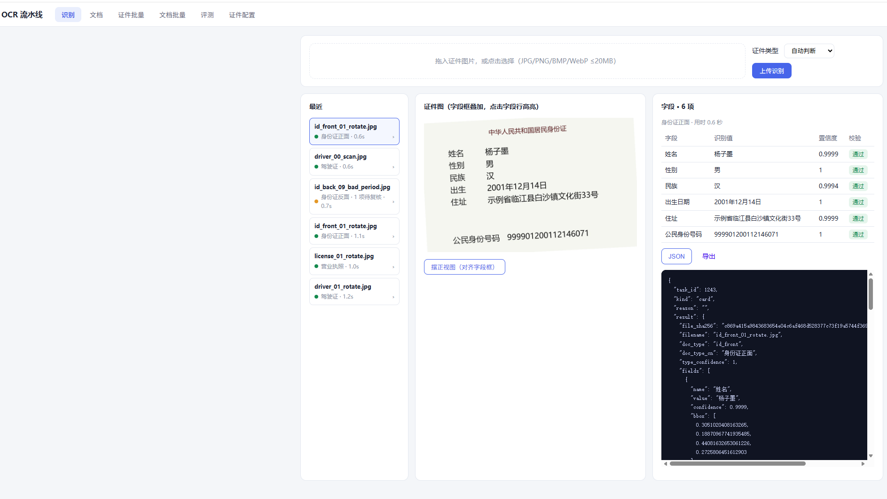
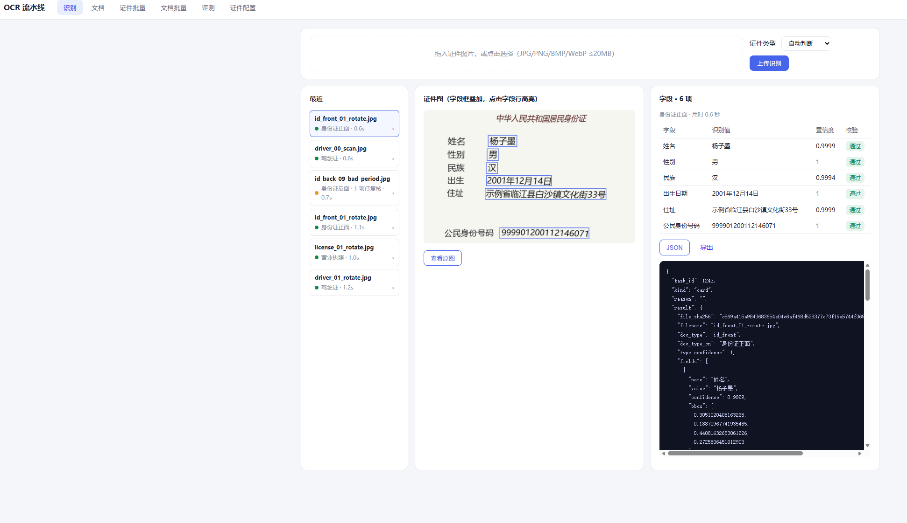
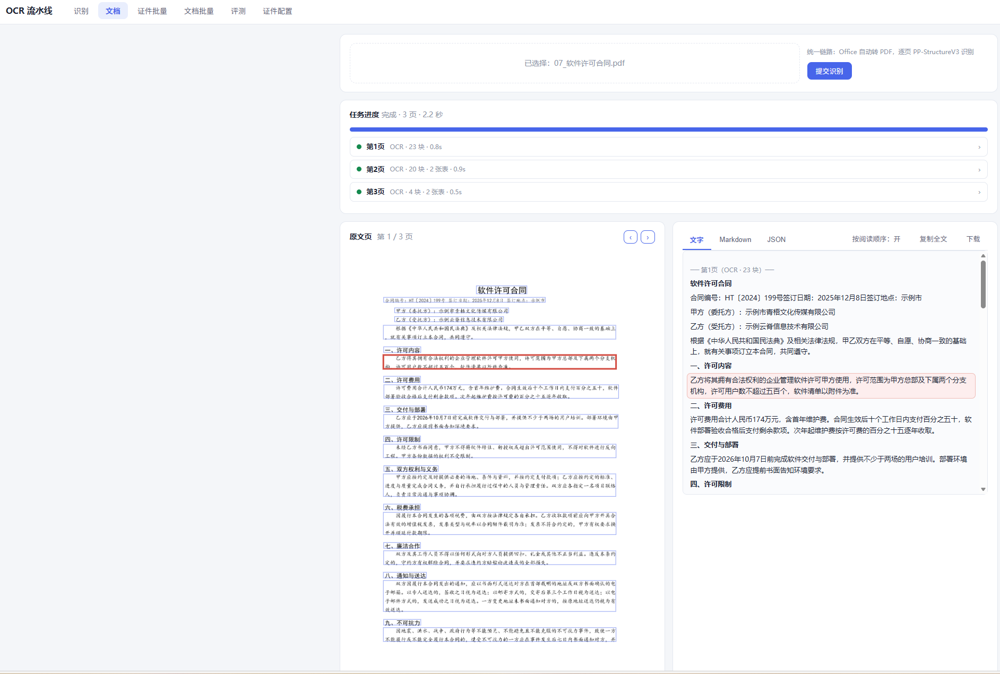
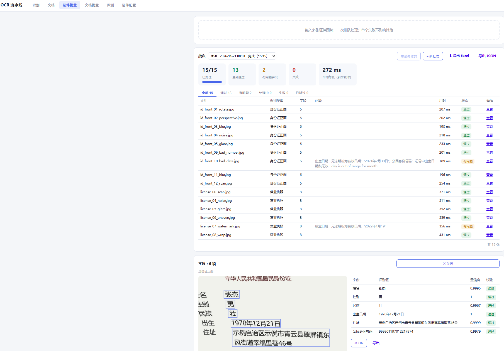
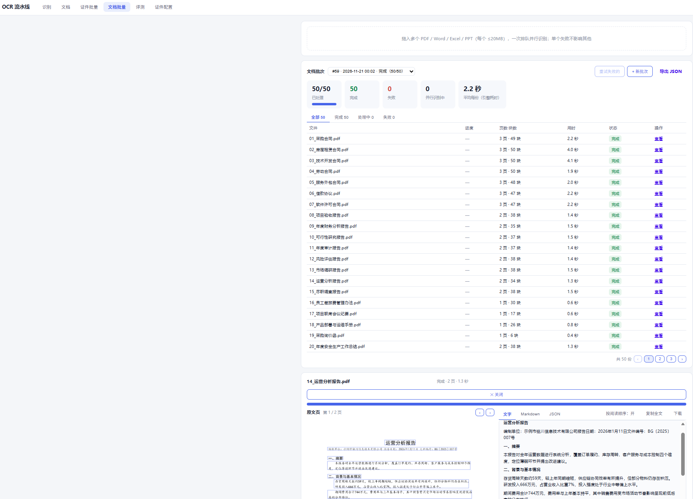
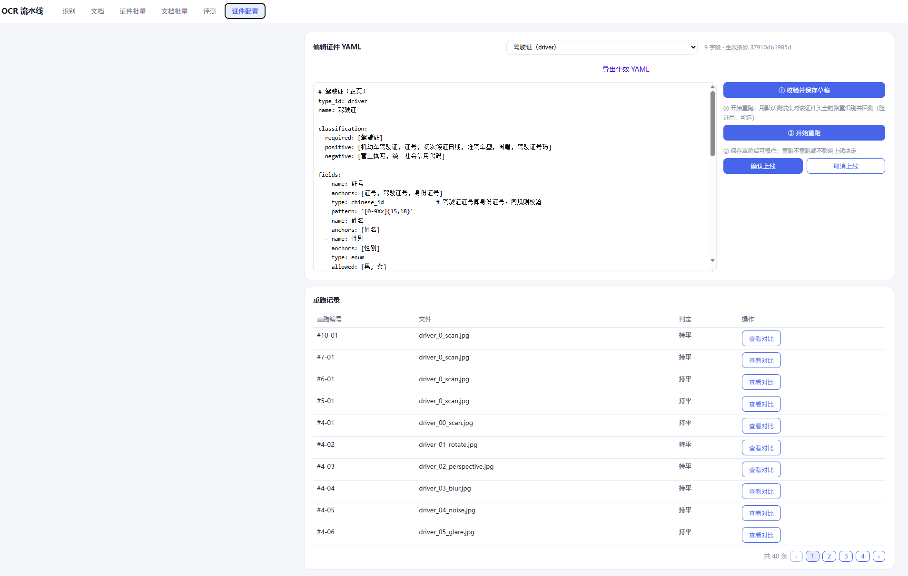
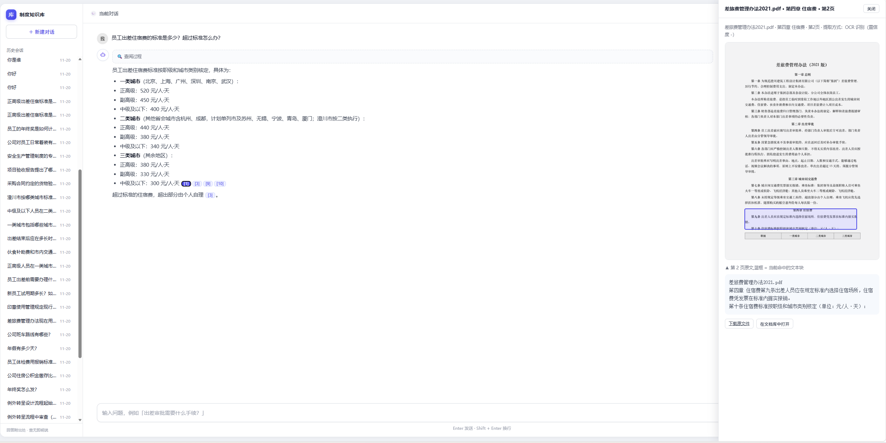
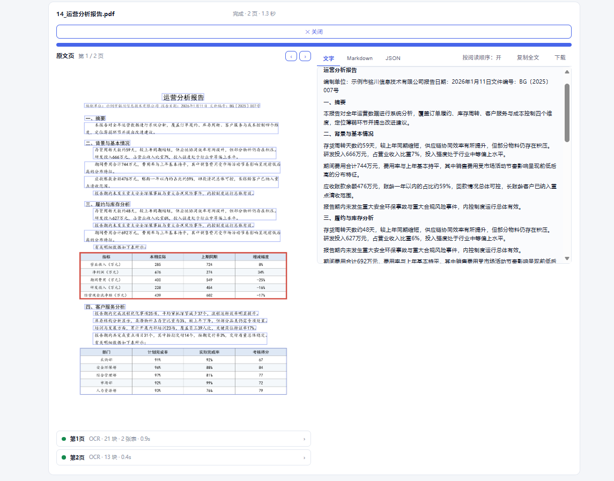

一套跑在 RTX 4090D 上的企业文档智能处理组合：项目一负责「看得清」——证件与文档的高精度 OCR 识别、校验与量化评测；项目二负责「用得上」——制度文档的自动摄入、语义检索与带出处的智能问答。两个系统通过接口闭环联动：知识库上传的每一份文档，都由 OCR 流水线在 GPU 上完成真实识别。
双引擎架构：证件识别 + 文档版面分析，统一文档链路逐页结构化；从单张识别到百级批量评测、从规则校验到流水线配置，全链路可视化。

身份证 / 驾驶证 / 营业执照等证件自动分类，字段级抽取为结构化卡片：姓名、性别、出生日期、住址、证号逐项带置信度与合规校验，识别质量一眼可判。

三栏工作台：左侧待识别文件列表，中间结构化字段卡，右侧完整 JSON 结果面板——业务侧取字段、系统侧对接接口，同一屏各取所需。

顶部指标卡汇总总数与失败数，任务进度实时可见；文档预览与结构化结果逐页对照，识别有误的位置直接在原文上红框标出，质检不用肉眼逐行比对。

百级规模批量评测实测：统计卡汇总文件数、失败数与平均耗时，逐文件明细列出识别耗时、置信度与通过 / 失败状态，单个失败不连坐、可单独重试。

文件列表与文档原图预览、识别结果三区联动：选中任一文件，原图与结构化结果同步呈现，正确与错误都有据可查，评测结果可回溯、可复核。

识别规则 YAML 化：检测、识别、后处理各节点参数在线编辑，改完即可用真实测试集重跑回测；规则与代码解耦，运营同学也能自主调优。
文档摄入自动调用项目一完成 OCR 与结构化切块；问答回答必附出处、查无明确说，每个引用都能回跳原文。

自然语言提问，流式生成回答并标注引用编号；答案旁边直接展开原始制度文档页面预览——「答案说了什么」与「原文写在哪」同屏互证。资料不足以回答时明确说「没有找到相关规定」，绝不编造。

制度文档自动解析：章节大纲树导航、正文段落与表格在原文页面上框选高亮，复杂表格结构原样保留——检索到的每一条规定都能精确定位到原文位置。
项目二上传的每一份扫描件与 Office 文档，都由项目一的 GPU worker 完成真实识别（非本地假数据）；识别结果回流切块入库，问答检索的每个引用块都能回跳到原文页与坐标框。同一台 4090D 上双服务并行，端到端约 4 秒。
| 指标 | 数值 | 口径 |
|---|---|---|
| 证件字段准确率 | 96.70%（264/273） | 43 张全劣化条件基线集，旋转/模糊/反光/水印/弯折全覆盖 |
| 证件类型判断 | 100% | 43/43，含多类证件混合 |
| 证件识别吞吐 | 2.29 张/s | 4 × GPU worker 并行，压测均值 |
| 文档批处理 | 50/50 零失败 | 扫描 PDF + Word + Excel + PPT 混合批次 |
| 知识库问答评测 | 总正确率 / 出处 / 表格 / 查无 均 100% | 标准问答对批量回测 |
| 摄入到可检索 | ≈ 4 秒 | 上传 → OCR 全链路 → 切块入索引 |
| 配置热切换 | 秒级 | 规则 YAML 新版上线，worker 无需重启 |